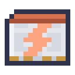

程序
凡是能带程序的，都跑同一种语言：智能体走到要处理的东西跟前，端口站在原地就能够到。这里不问任何模型。程序照写的去做，可以每刻都做，能做多猛取决于它的升级。
每段程序旁的「指令板」把这一切分页摆好，点选就能拼出来。指向每个组件时会显示它的作用，所以这里的东西都不必输入，也不必记。
步骤
各步之间用逗号隔开。一步可以带数量、东西，以及说明在哪里的词：
send 64 iron ingot from front to networkdig stone at box(front, mark(2))use shears at entities(4, sheep)fling 8 cobblestone at up speed 1 pitch 45
行走： go、come、home、stay、follow、forward 3、back、up、down、turn left，以及 teleport 跳到中继覆盖的地方。
搬运： send 运物品，pump 运流体，charge 运能量，都是 from 一处 to 另一处，或者 to each 轮流给一个列表中的每一处，每次多少取决于升级。pump 能把世界里的水源方块抽走，也能放回去；网络像存物品一样存流体：pump from front to network。pickup 捡起周围的东西，pickup xp 把经验变成瓶子。drop、fling、void（物品）和 drain（流体）把它们处理掉。take、put、give 和 fetch 经由家周围的储藏。
世界： dig 和 place 可用于任何区域。use 是右键，用手里的东西点方块或生物；加上 sneak 就是蹲着点。attack 用手里的东西打。extrude 8 stone at up 一格一格铺出一条线，retract 8 at up 把它收回。emit 15 发出红石信号，pulse 15 for 5 发五刻。sign 在告示牌上写字。harvest、plant 和 till 打理田地；mine 找到方块并挖过去。
手上： select 选槽位，transfer 移到另一格，equip 换工具，refuel 烧能烧的东西，lift 抬起生物，lower 放下。
物流： craft 8 torch 用手里的东西当场做出来，做不了的交给它的网络去做。supply 去找任务缺的东西。在团队的告示板上，provide 提供某处的东西，push 要把它送走，accept 接收被送走的东西，request 16 iron ingot 要某处保持这么多；deliver 在它们之间跑一趟。两个端口加一个搬运者，基地就能自己把东西传下去。
表达： wait、say、note（写给读程序的人）、sound、particle、rename、run at front（运行那里的程序卡上写的东西）、retire（变回物品）。
位置
front、back、left、right、up、down 是它自己的各个方向，here 和 home 如其字面。数字是勘测杆留下的标记，勘测杆对端口同样有效：潜行对端口使用，把标记交给它。pos(1, 64, 3) 是一个位置，offset(here, north, 3) 是算出来的位置，pos(1, 64, 3, the_nether) 是另一个维度的位置，只有中继够得到。network 是它的存储网络，hands 是它手里的东西，owner 是放下它的人，不论那人在哪儿：section(armor)、section(offhand) 或 section(ender) 指那人所带东西的某一部分。
值
值可以是数字、"文字"、true 或 false、东西、流体、位置、区域、生物，或这些东西的列表。
$x属于程序，随程序而去。@x属于机体，换程序也还在。别的机体用read_var(front, "x")读它。#x是频道，同一团队共用一份，随世界保存。
set $n count(front, coal) * 2 算出一个值。数字可用 + - * / %，任何值都可用 = != < <= > >= 比较，条件用 and、or、not 连接。在函数的参数里，普通词语就是东西的名字：count(front, iron ingot)。在 say 或 sign 的词语里，$x 代表它存的值。
列表写作 [1, 2, 3]，用 + 连接。逐项处理时用 $it 代表每一项：map($list, $it * 2)、filter(items(front), food($it) > 3)、sum、sort、first、count、any、all，以及在各项之间保留 $acc 的 reduce。
循环与分支
if … (…) else (…)、repeat (…)、repeat 3 (…)、repeat count($list) (…)、while … (…)、until … (…)、for each $x in … (…)（可遍历列表或区域），以及 wait until …。next 进入下一轮，leave 跳出这一轮的循环，stop 结束程序。最早的那些条件仍可不加括号：have 3 bread、ripe、full。
to row $n $what (repeat $n (place $what at front)) 造一个你自己的步骤，写在程序的任何地方都行；row 3 cobblestone 运行它。参数归它自己，return 2 结束它并把值留在 $result 里，它还能调用自己，最深 64 层。
事件
处理程序守在程序旁边，有事发生时就插进来：
on redstone at 1 (…)，某处得到信号时on item coal at front (…)，有东西到来时on block at 1 (…)，方块变化时on timer 5 (…)，每五秒on change #needed (…)，某个值变化时when count(front) > 16 (…)，某个条件成立时
被打断的部分之后接着做，wait 也会等完剩下的时间。加上 priority 5 说明轻重：处理程序只打断优先级比它低的，否则排队等候。程序本身是 0，处理程序不写就是 1。
区域
只要一步写了 at、from 或 to，都可以用区域，它会一点一点地做完。区域最多 250,000 格。
| 形状 | 范围 |
|---|---|
box(a, b) | 两角之间的每一格；hollow 只取各面，frame 只取各棱 |
cylinder(a, b, filled, y) | 绕 a 的圆，半径到 b，沿某轴延伸；tube、hollow |
grid(a, b, 3) | 两角之间每隔三格取一格 |
line(a, b) | 一条直线经过的格子 |
pyramid(a, b, y) | 尖在 a，底在 b；hollow |
random(a, b, 10) | 两角之间的十个位置 |
sphere(a, b) | 绕 a，半径到 b；hollow |
torus(a, b, y) | 绕 a 的环；hollow |
wall(a, b, y) | 两角间的线，沿某轴延伸 |
+ 合并区域，- 从一个区域里去掉另一个：dig at sphere(1, 2) - box(3, 4)。near(8) 是以它为中心、向外八格的方块区域。
过滤
一步处理的东西可以有很多种说法，物品、流体和生物都用同样的词：
iron ingot、coal or cobblestone、except oak log：白名单和黑名单tag(logs)、mod(minecraft)、regex("_ore$")where durability($it) < 50：语言能读到的关于它的任何事，比如damage、fluid_fill、energy_fill、enchanted或foodghosts()：端口九个过滤槽显示的东西items(1)：箱子里有什么。所以一箱样品就是一个过滤器，它有多少格就能装多少种pump water、attack at entities(8, zombie)、entities(8, mob)、entities(8, tag(raiders))，以及entities(8, other_than(player))：凡是能用过滤器的地方，都能这样写黑名单kind(food)：过滤模型的说法。需要一个通过分拣的检查点或调谐好的中继卡（模型与测试），放在智能体的过滤器槽或端口的过滤模型槽里。每样东西按名字问一次；它拿不准的，或者根本没有模型的，都算kind(other)。
读取世界
函数能读机体够得着的一切，用的词和别处一样，都列在指令板的「感知」页上：
- 物品栏、储罐、能量：
count、items、slots、slots_used、fill、fluid_amount、fluids、tanks、energy、energy_capacity - 方块：
block、has_block、property(block(front), lit)、biome、light、compare、detect、block_data - 红石：
signal、redstone、comparator、clock(5) - 生物：
entities、players、health、held、armor、is_baby、can_breed、target、carrying - 机器：
working、has_work、progress、temperature、recipes(front)、recipe_output(raw iron, front) - 世界：
is_day、is_rain、time、tps、world_name、player_count，以及heard(harp)，附近音符盒奏出的音 - 网络：
is_network、network_items、network_count(iron ingot)、network_fluids、network_fluid_count(water)、network_ports、craftable、jobs、network_lacks、power_stored、power_drawn - 它自己：
fuel、reach、run_items、selected、slot_item、equipped、upgrades(speed)
在端口上
端口界面上的「程序」打开它运行的东西。顶行最多放九张程序卡，各有各的程序，同时运行，共用下面的槽位、升级、储罐和电池。点一张卡查看，在框里写好，按「运行」。放了写好的卡，端口就照卡上说的做，而不再照它的模式做。
它处理的东西不必贴着它。它能够到 8 格，有范围升级就更远；network 是它背后连着的存储网络。
升级
机体的工作以操作为单位：运一次物品、流体或能量，或挖、放一个方块。旁边面板里什么也没有时，一次操作要 8 刻，运 8 个物品、250 mB 或 1,000 FE，最远 8 格。升级就放在那个面板里，每格一种，端口和智能体都一样。
| 升级 | 每个 | 最多 | 到头 |
|---|---|---|---|
| 速度升级 | 时间减半 | 3 | 每刻一次操作 |
| 堆叠升级 | 物品翻倍 | 3 | 64 个，即每个程序每秒 1,280 个 |
| 范围升级 | 加 8 格 | 5 | 48 格 |
| 流体升级 | 流体翻倍，储罐加 16,000 mB | 4 | 4,000 mB，即每秒 80,000 mB |
| 能量升级 | 能量翻四倍，电池加 800,000 FE | 4 | 256,000 FE |
| 负载升级 | 智能体多 6 格 | 6 | 48 格 |
| 升力升级 | 智能体能飞 | 1 | 空中每刻 10 FE |
制造机用注意力光掩模做速度、堆叠、范围、流体和负载升级，用 Transformer 光掩模做能量和升力升级。





调谐到模型服务器的中继卡也放在升级之中，这样机体就能够到服务器的中继所覆盖的任何地方，每次操作 100 FE；teleport 跳过去要 10,000 FE。有能量升级的机体用 charge from front to hands 从储能单元或任何储能的东西取能量，或用 refuel 烧手里的东西：一块煤 64,000 FE。
看着它工作
机体正在做的那一步会用程序里的写法浮在它上方，只要你在 16 格以内并朝它那边看。青色是进行中的步骤，灰色是等待，琥珀色是停在调试器里的程序。运行多段程序的端口显示第一段在工作的，以及还有几段。只有最靠近视野中央的几个会浮现，绝不互相遮挡，所以在一排端口前，你读到的是你看着的那几个，其余的亮着的侧面说明它们也在工作。F1 可以隐藏它们。
调试器
程序的「追踪」旁边是它的调试器：每一步占一行，正在做的那一行亮着。暂停按钮让它停在下一步，「单步」运行一步再停住。点一行，每次走到那里都会停下，也可以在程序里写 breakpoint。下面的「值」显示它的变量存着什么，你在「观察」里写的任何东西，比如 count(front)，都会随着运行重新计算。
什么约束着程序
程序每刻最多走 32 步，剩下的下一刻接着走，所以空循环拖不住世界，算得太久的式子会失败。失败的一步在追踪里说明原因，程序接着做下一步。「停止」总能让它停下。
谁能使用
端口或智能体属于放下它的人。界面旁的锁说明还有谁能打开和修改它：任何人、主人的团队，或者只有主人。/residual team make 名字 建队，/residual team invite 玩家 邀请，/residual team join 名字 和 /residual team leave 如其字面。同一团队共用频道和物流告示板。